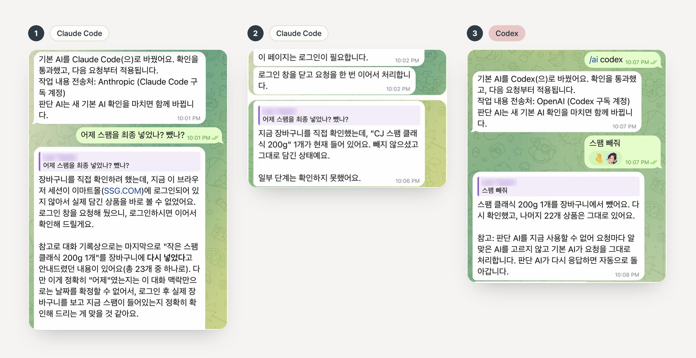

StillHere with you.
조용히 곁에, 세심하게 함께.
A personal AI that works through everyday things with you. Still is the first face of Personal AgentOS, an open-source assistant that lives on your own computer.
Install on Mac, Linux or Windows (WSL2)
curl -LsSf https://raw.githubusercontent.com/Jongtae/agentos/94776134546ed400ab1573d171c0bca2975a5f22/scripts/install.sh | shThoughtful, warm, quiet but not passive.
-
Warmth comes from context.
Still uses the preferences and situation you actually told it. It doesn’t perform feelings or praise you for no reason.
-
Honesty shows in the result.
It says done, checked or remembered only when that was verified, and it names what it doesn’t know or what failed.
-
Usefulness is the next step.
Instead of repeating status lines, it tells you what moved and what comes next. Quiet is not the same as passive.
Say less. Still remembers what you said.
You don’t write a long prompt with every detail. Still brings in what you have already told it, does the tedious part, and stops where your decision matters.
- Hi, I’m Still. What would you like a hand with today?
- A café to work from this afternoon.
- I’ll look at the mood, and also whether you can sit and work for a few hours. You said that matters to you. Here are three nearby.
- Out of coffee, by the way.
- Your usual beans are in the cart. Nothing is paid until you say so.
The brain can be borrowed. Still stays yours.
Tony Stark owned the technology behind J.A.R.V.I.S. Most of us will borrow our assistant’s brain from a provider whose models, prices and rules keep changing. Personal AgentOS keeps the assistant on your side, on your machine, and lets the AI underneath be replaced.
Changes when you want
- The model and its provider
- Codex with your ChatGPT plan, or Claude Code with your Claude plan
- Tools and connectors
Stays with Still
- What it knows about you
- Unfinished work and its next step
- The permissions you gave it
- A record of what actually ran
From a real session: the owner switched from Claude Code to Codex in the middle of a shopping task, and Codex finished the next request in the same cart without being told anything again.
See the real conversation

- Claude Code. “Did I end up adding the Spam yesterday, or taking it out?” It picks up the earlier shopping conversation and asks to sign in.
- Claude Code. After signing in, it checks the cart: one 200 g can of Spam Classic is still there.
- Codex. After
/ai codex: “Take the Spam out.” Removed, rechecked, 22 items left. Nothing had to be explained again.
Telegram, 8 October 2026, Korean interface. The sign-in link is cropped and names are blurred.
- Only what you connect. Folders, accounts and tools you choose; a connected folder is read-only unless you say otherwise.
- Payment waits for you. Adding to a cart and paying are different actions, and every payment needs your approval.
- Secrets stay out. Passwords and tokens never go into a model prompt, a log or the record of what ran.
Bring Still home tonight
You need a Mac, a Linux machine or Windows with WSL2, and an AI subscription you already pay for: ChatGPT (through Codex) or Claude (through Claude Code). No API key, Homebrew, Python or Docker required.
-
Install and start
curl -LsSf https://raw.githubusercontent.com/Jongtae/agentos/94776134546ed400ab1573d171c0bca2975a5f22/scripts/install.sh | shThe URL pins the installer; read the script before you run it. With Homebrew instead:
brew install jongtae/agentos/agentos, thenagentos start. On Windows, runwsl --installin PowerShell, restart, open Ubuntu and run the command there. -
Connect your AI
For ChatGPT, sign in to the official Codex CLI (
codex login); AgentOS never sees that login. For Claude, runclaude setup-tokenand paste the token once; it stays in this computer’s credential store. Then choose it on the page that opens at127.0.0.1:8787. You can switch later; Still keeps what it knows. -
Talk from your phone (optional)
Create your own bot with @BotFather on Telegram (
/newbot), paste its token under Settings → External connections, and open the pairing link. Or just chat in the browser. -
Ask for something real
Say “Remember that I have a cat and live in a small studio.” Still tells you what it saved and how to undo it. Then ask “Find me a robot vacuum under $500 that would suit me.” The answer should use what you just told it.
Everything else is in the quick start guide.
Open source, built in the open.
Personal AgentOS is AGPL-3.0 and developed on GitHub. Both installers install v1.3.0 (10 October 2026). Product status separates what ships, what is tested and what is still direction.
한국어
Still은 Personal AgentOS의 첫 모습입니다. 내 컴퓨터에서 사는 오픈소스 개인 AI로, 뒤에서 생각하는 AI를 바꿔도 같은 비서로 남습니다. 한국어 페이지로 보기